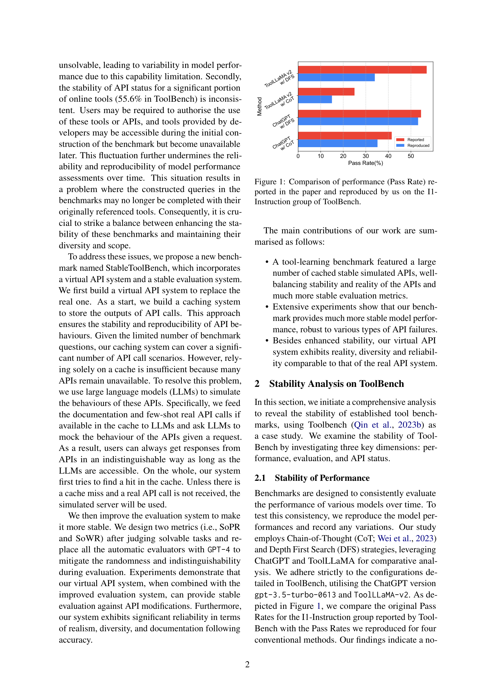
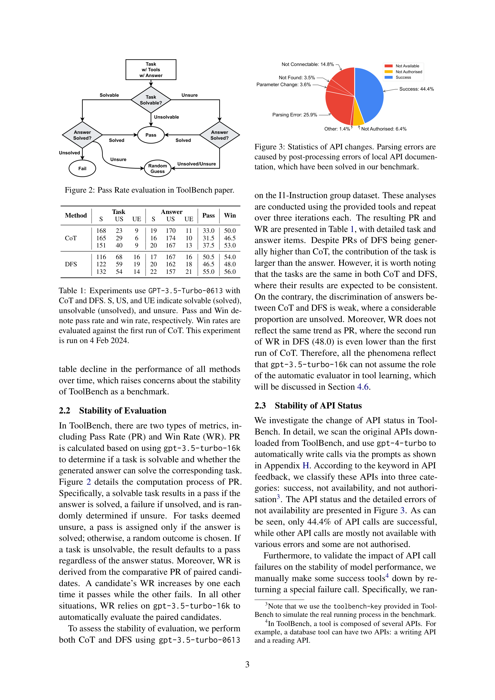
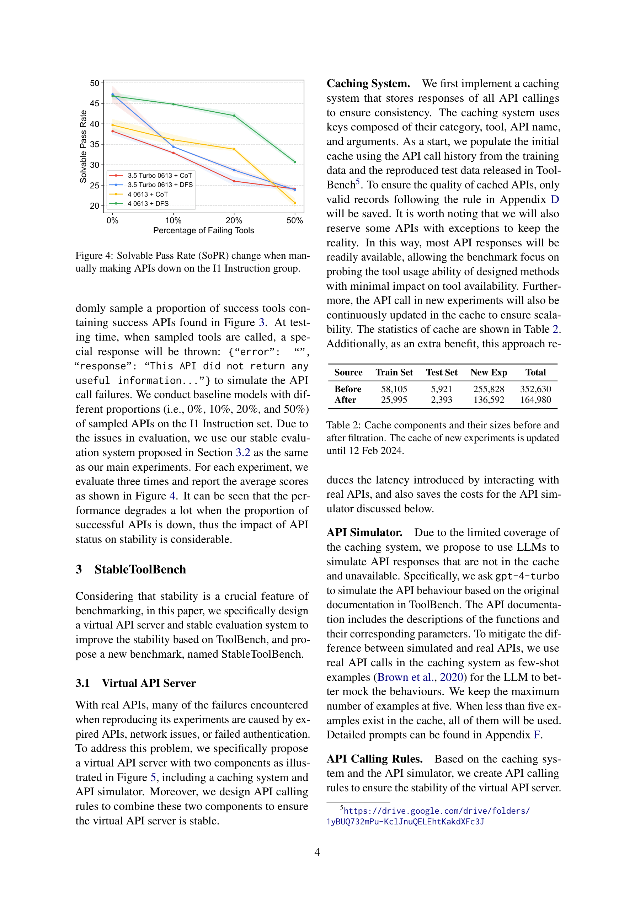
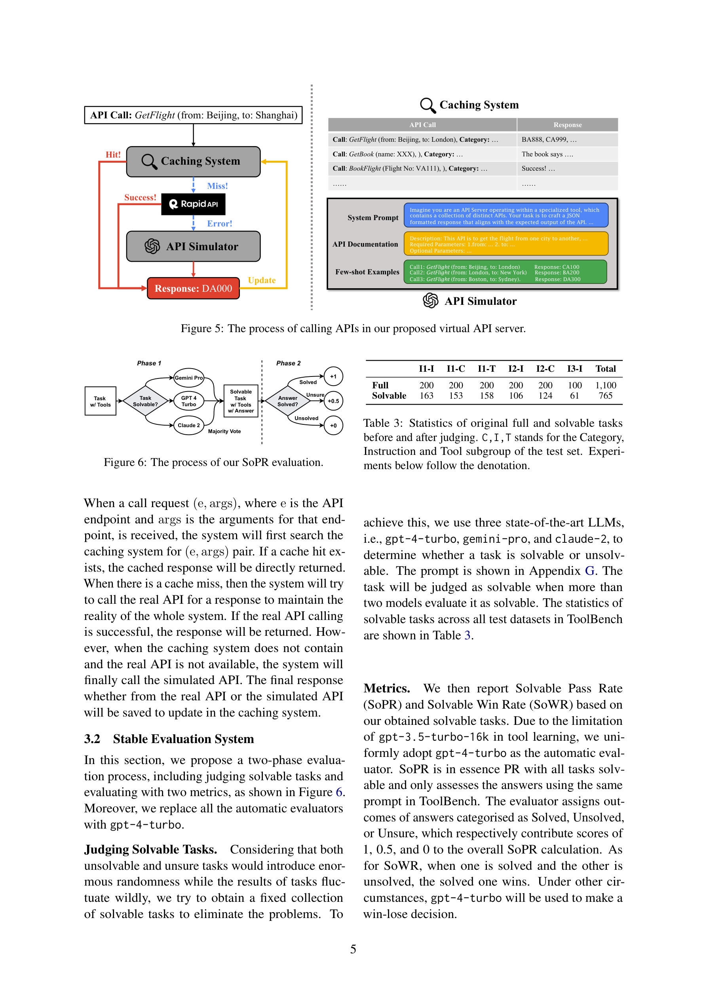

저자: Zhicheng Guo, Sijie Cheng, Hao Wang, Shihao Liang, Yujia Qin, Peng Li, Zhiyuan Liu, Maosong Sun, Yang Liu | 날짜: 2025-03-05 | arXiv: 2403.07714 | DOI: 10.48550/arXiv.2403.07714

Figure 1
StableToolBench는 기존 ToolBench의 불안정성 문제(API 상태 변화, 평가 무작위성)를 해결하기 위해 가상 API 서버(캐싱 시스템 + LLM 기반 API 시뮬레이터)와 안정적 평가 시스템(Solvable Pass Rate/Win Rate + GPT-4 평가자)을 제안한 벤치마크이다. 50%의 API가 비가용 상태에서도 성능 변동이 분산 범위 내에 머물러, 대규모 tool learning 벤치마크의 재현성과 비교 가능성을 크게 향상시켰다.

Figure 2

Figure 4

Figure 5
총평: ToolBench의 재현성 문제를 캐싱과 LLM 시뮬레이션이라는 실용적 접근으로 해결한 엔지니어링 기여가 탁월한 논문이다. API 비가용률 50%에서도 안정적 성능을 유지하며, Turing Test를 통해 시뮬레이션의 현실성을 입증한 점이 인상적이다. 다만, GPT-4 의존성이 높아 비용과 재현성 측면에서 근본적 한계가 있으며, 실시간 데이터 의존 API 처리 등 해결해야 할 과제가 남아 있다. Tool learning 연구 커뮤니티에 안정적 벤치마킹 기반을 제공하는 중요한 인프라 수준의 기여이다.